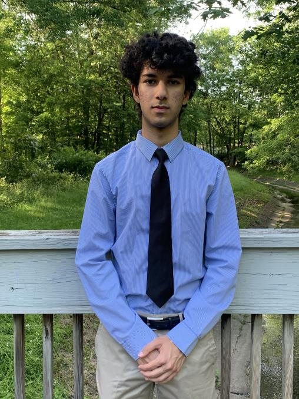

.jpg)
Keaton Hawkins: Co-President
Keaton Hawkins is a senior at the Union County Academy for Information and Technology. He takes rigorous courses at school such as AP Calculus BC, AP Microeconomics and Macroeconomics, and AP Computer Science. He is our resident programmer with knowledge in HTML, CSS, Javascript, Java, Python, C, and Oracle SQL. He has participated in a UCVTS hackathon and loves to code and play piano in his spare time.

Rohan Gudwani: Co-President
Rohan is a junior at New Providence Highschool. He loves music and tennis. Currently, he is a part of the New Providence Marching Band, the Select Choir of New Providence High School, and is a co-captain of the New Providence High School Varsity tennis team. Rohan also enjoys speech and debate, as he is a part of the NPHS Model United Nations Delegation. In his spare time, Rohan enjoys playing video games with his friends.

Harlie Dultz: Secretary
Harlie is a senior at Union County Academy of Exercise Physiology. She takes classes like AP Calculus AB, Dynamics of Health Care, Medical Terminology, Anatomy and Physiology, and Emergency Health Care. Harlie has volunteered as a teacher’s assistant at Sunday Hebrew School in Summit, New Jersey. Not only is she responsible, organized, and conscientious, but also incredibly sociable. Her bubbly attitude brightens the mood of the whole company. As a hobby, Harlie is a passionate watcher and reader of Japanese media.

Ian Zane: Treasurer
Ian is a senior at Union County Academy of Allied Health and Sciences. He takes rigorous courses such as AP Calculus BC, Introduction to EKG, and Anatomy and Physiology. Ian is working as a veterinarian’s assistant and as an Eagle Scout, he contributed to a disabled learning center. Ian was also a part of the crew for a local musical. He is interested in biomedical engineering but is a part of numerous musical ensembles as well.
Our other employees:
Alex Screnci • Alyssa DeMarco • Caitlyn DeMarco • Christopher Verbaro • Cooper Fischbeck • Ethan Neidich • Greg Genualdi • Isabella Socha Soares • Jack Morel • Ksenia Dontsova • Liam Avila • Molly McPoland • Rahul Tejwani • Renee Li • Robert Schmidt • Tim Zaslavsky • Yassid Martinez